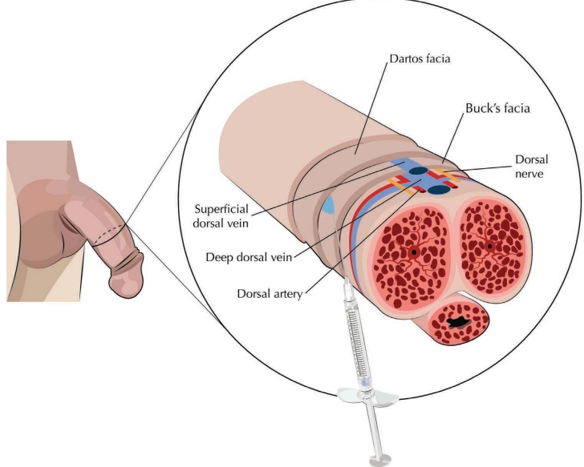
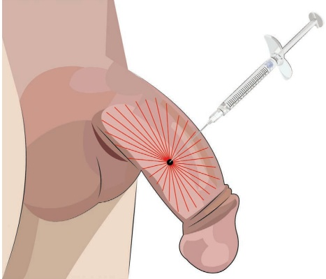
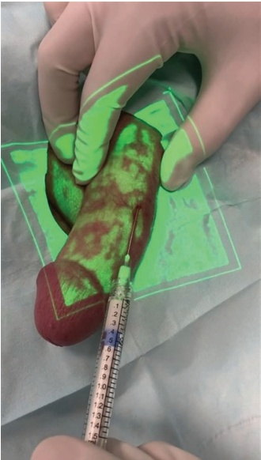
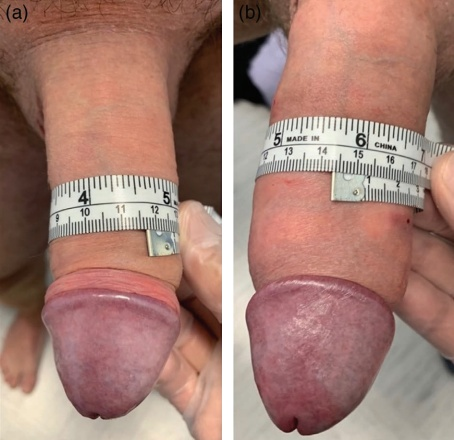

42 私密区域：阴茎丰容
42.1 引言
患者常表达增加阴茎尺寸的愿望。有些人对其在其他男性眼中的形象（更衣室综合征）或伴侣的看法感到不安全 [1,2]。直到最近，治疗选择仅限于牵引装置 [3,4] 和手术 [5–9]。如今，存在多种有效的非手术方法来增强男性生殖器，包括真皮填充剂注射 [10–12]。在本章中，将特别提及使用羟基磷灰石钙（CaHA）进行阴茎增粗。
据我们所知，尚无发表的证据表明使用 CaHA 进行阴茎增粗，尽管已有类似材料的提出 [13]。科学界支持此类非手术方法，因为它们成本低、微创且不良事件少于外科美容手术。然而，一些作者指出，在使用此类材料时必须谨慎考虑，以避免触发 I 型超敏反应，并且由于这些填充剂的可吸收性，可能需要重复注射 [14,15]。因此，CaHA 因其结节形成发生率低、能够刺激成纤维细胞合成胶原蛋白产生持久效果，以及与生理盐水混合时质地平滑等特点，代表了一个理想的选择。
在阴茎使用 CaHA 时主要的顾虑是引起血管闭塞，特别是供应海绵体的背侧动脉（参见危险区域）。因此，建议使用钝性套管针在解剖层 4（筋膜下）注射 CaHA。此外，推荐使用静脉可视化系统在操作过程中观察静脉系统 [16,17]。另外，毛发在使用此类设备时会造成视觉伪影，因此建议患者在术前两到三天剃除阴茎体部，以使任何划伤或切口得以愈合。初始的静脉可视化扫描有助于使用导针选择正确的入点。
与 G 点增粗（第 40 章）类似，FDA 已将 CaHA 用于阴茎增粗定为超说明书用途；因此，当患者和医生决定进行此项治疗时必须谨慎考虑。根据作者的建议并获得欧洲泌尿外科学会 [18] 的认可，除了知情同意书外，还应填写心理评估问卷（如男性生殖器自我形象量表）来评估患者的满意度水平 [19,20] 和潜在的阴茎畸形障碍 [21]。
42.2 危险区域
在阴茎增粗过程中，需要注意的神经血管危险区域包括浅背静脉（位于 Dartos 筋膜下方）、背动脉、深背静脉和背神经（位于 Buck's 筋膜下方）（图 42.1）。
42.3 阴茎增粗套管针技术
注射定位，参见图 42.2。
42.3.1 分步技术
-
对需要进行背侧阴茎神经阻滞的区域进行消毒，或简单地局部外用麻醉剂，如 30% 利多卡因或 20% 苯佐卡因/10% 利多卡因/10% 特拉卡因。
-
如果使用了局部外用麻醉剂，则清洁阴茎残留物并消毒。
-
在睾丸和阴茎周围套上收缩环，使阴茎半充血。
-
术中阴茎必须处于勃起状态以最大程度地减少轮廓不规则；因此使用 Trimix（伐瑞那、吩噻胺和孕激素 E1）进行注射。使用 31G 针头，在横截面上于阴茎的 2 点钟或 10 点钟方向分别注射 0.3 mL 的 Trimix。达到勃起后取下收缩环。
注意：必须筛查患者近期是否使用过 PDE5 抑制剂，因为与这些药物联用 Trimix 可能导致肉棒持续勃起（priapism）。应指导患者在手术日期临近时避免使用。
-
再次消毒该区域。
-
在横截面上于阴茎的 2 点钟或 10 点钟方向引入一根 21G 套管针，位于阴茎体部中段。利用 AccuVein 确定理想位置以避免刺破血管。
-
准备 CaHA 的 1:1 稀释液，甚至标准稀释液（0.3 mL 利多卡因与 1.5 mL CaHA 混合），以及一个 22G、70 mm 的注射套管针。


- 将22G钝性套管针穿过Buck's筋膜，在筋膜下平面以线性逆行线状植入CaHA，最好在静脉可视化系统的引导下进行。不要注射得太浅以避免结节形成，也不要注射得太远（即不能位于龟头下方），因为该区域的皮肤对于CaHA来说太薄了（图 42.3）。

-
将产品 1/4 分别涂抹于阴茎的四个象限，即以钟面指针为指引，从八点钟到两点钟的位置和从四点钟到十点钟的位置，在阴茎体部中段以下、上方的背侧。可跨越中线以使产品分布均匀。
-
涂抹产品并按摩，以最大限度地减少轮廓不规则性。最好在患者勃起时进行此操作。建议事先向患者说明本部分操作的注意事项。
有关六个月后的评估，请参阅图 42.4。
42.4 术后护理
建议在手术后几天内继续按摩阴茎，以抚平任何潜在的结节或产品沉积不均的情况。通过体液从注射部位传播 HIV 或肝炎的风险存在；因此，术后前三天可使用物理屏障进行性生活（如果患者不了解伴侣的健康状况，这一点更为重要）。是否需要重复治疗取决于三个月后的评估，尽管大多数情况下需要增加周径或平滑因产品分布不均或迁移导致的任何轮廓不规则性。第二次治疗后，轮廓不规则性通常难以察觉。

42.5 附加治疗方案
建议使用具有高弹性的透明质酸（HA）产品来增加龟头下体部的体积。对未包皮的患者需谨慎，因为该区域过多的体积可能导致包茎。然而，HA 允许透明质酸酶降解产品。
应特别关注那些存在高度阴茎不满意度的患者，并劝阻其采用非医疗和自我造成的替代方法。有大量证据报道了使用异物材料进行自阴茎增生的案例 [22,23]。这些文章大多报告了由异物引起的肉芽肿性炎症反应，导致阴茎疼痛、肿胀、硬化、脓性分泌物和溃疡，这可能导致包皮环切术和皮肤手术切除等致命后果 [24]。
参考文献
[1] J. Oates, G. Sharp, “Nonsurgical medical penile girth augmentation: Experience-based recommendations,” Aesthet Surg J, vol. 37, no. 9, pp. 1032–1038, 2017.
[2] M. C. Hehemann et al., “Penile girth enlargement strategies: What’s the evidence?,” Sex Med Rev, vol. 7, no. 3, pp. 535–547, 2019.
[3] P. Gontero et al., “A pilot phase-II prospective study to test the ‘efficacy’ and tolerability of a penile-extender device in the treatment of ‘short penis’,” BJU Int, vol. 103, no. 6, pp. 793–797, 2009.
[4] M. Nikoobakht et al., “Effect of penile-extender device in increasing penile size in men with shortened penis: Preliminary results,” J Sex Med, vol. 8, no. 11, pp. 3188–3192, 2011.
[5] Z. Jin et al., “Tissue engineering penoplasty with biodegradable scaffold maxpol-T cografted autologous fibroblasts for small penis syndrome,” J Androl, vol. 32, no. 5, pp. 491–495, 2011.
[6] D. H. Kang et al., “Efficacy and safety of penile girth enhancement by autologous fat injection for patients with thin penises,” Aesthetic Plast Surg, vol. 36, no. 4, pp. 813–818, 2012.
[7] N. Mertziotis et al., “Is V-Y plasty necessary for penile lengthening? Girth enhancement and increased length solely through circumcision: Description of a novel technique,” Asian J Androl, vol. 15, no. 6, pp. 819–823, 2013.
[8] O. Shaeer, “Girth augmentation of the penis using flaps ‘Shaeer’s augmentation phalloplasty’: The superficial circumflex iliac flap,” J Sex Med, vol. 11, no. 7, pp. 1856–1862, 2014.
[9] L. Xu et al., “Augmentation phalloplasty with autologous dermal fat graft in the treatment of ‘small penis’,” Ann Plast Surg, vol. 77, no. Suppl 1, pp. S60–S65, 2016.
[10] T. Il Kwak et al., “The effects of penile girth enhancement using injectable hyaluronic acid gel, a filler,” / Sex Med, vol. 8, no. 12, pp. 3407–3413, 2011.
[11] D. Y. Yang et al., “Tolerability and efficacy of newly developed penile injection of cross-linked dextran and polymethylmethacrylate mixture on penile enhancement: 6 months follow-up,” Int J Impotence Res, vol. 25, no. 3, pp. 99–103, 2012.
[12] L. Casavantes et al., “Penile girth enhancement with polymethylmethacrylate-based soft tissue fillers,” J Sex Med, vol. 13, no. 9, pp. 1414–1422, 2016.
[13] C. Manfredi et al., “Penile girth enhancement procedures for aesthetic purposes,” Int J Impot Res, vol. 34, no. 4, pp. 337–342, 2021.
[14] L. Baumann, “Collagen-containing fillers: Alone and in combination,” Clin Plast Surg, vol. 33, no. 4, pp. 587–596, 2006.
[15] M. T. Kim et al., “Long-term safety and longevity of a mixture of polymethyl methacrylate and cross-linked dextran (Lipen-10®) after penile augmentation: Extension study from six to 18 months of follow-up,” World J Mens Health, vol. 33, no. 3, p. 202, 2015.
[16] G. S. K. Lee, “Use of AccuVeinTM for preventing complications from accidental venipuncture when administering dermal filler injections,” J Cosmet Laser Ther, vol. 17, no. 1, pp. 55–56, 2015.
[17] K. W. Law et al., “Use of the AccuVein AV400 during RARP: An infrared augmented reality device to help reduce abdominal wall hematoma,” Can J Urol, vol. 25, no. 4, pp. 9384–9388, 2018.
[18] M. Falcone et al., “European association of urology guidelines on penile size abnormalities and dysmorphophobia: Summary of the 2023 guidelines,” Eur Urol Focus, vol. 10, no. 3, pp. 432–441, 2024.
[19] D. Herbenick et al., “The development and validation of the male genital self-image scale: Results from a nationally representative probability sample of men in the United States,” J Sex Med, vol. 10, no. 6, pp. 1516–1525, 2013.
[20] S. N. P. Davis et al., “The index of male genital image: A new scale to assess male genital satisfaction,” J Urol, vol. 190, no. 4, pp. 1335–1339, 2013.
[21] D. Veale et al., “Penile dysmorphic disorder: Development of a screening scale,” Arch Sex Behav, vol. 44, no. 8, pp. 2311–2321, 2015.
[22] A. E. Dellis et al., “Paraffinoma, siliconoma and co: Disastrous consequences of failed penile augmentation—a single-centre successful surgical management of a challenging entity,” Andrologia, vol. 50, no. 10, p. e13109, 2018.
[23] J. N. Svensøy et al., “Complications of penile self-injections: Investigation of 680 patients with complications following penile self-injections with mineral oil,” World J Urol, vol. 36, no. 1, pp. 135–143, 2018.
[24] K. H. Pang et al., “Complications and outcomes following injection of foreign material into the male external genitalia for augmentation: A single-centre experience and systematic review,” Int J Impotence Res, vol. 36, no. 5, pp. 498–508, 2023.